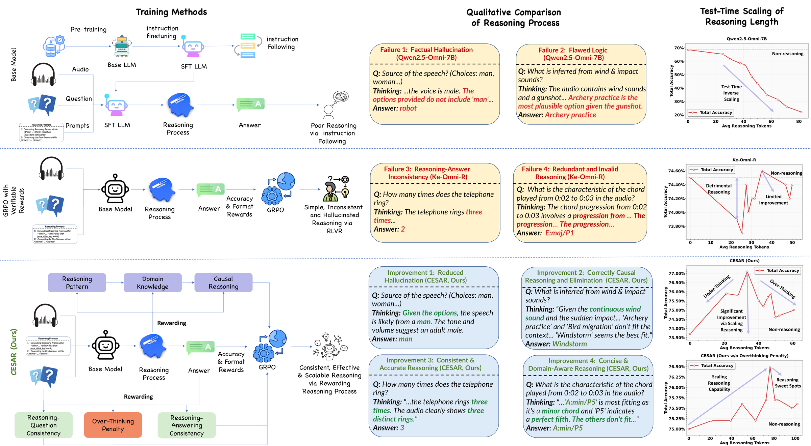
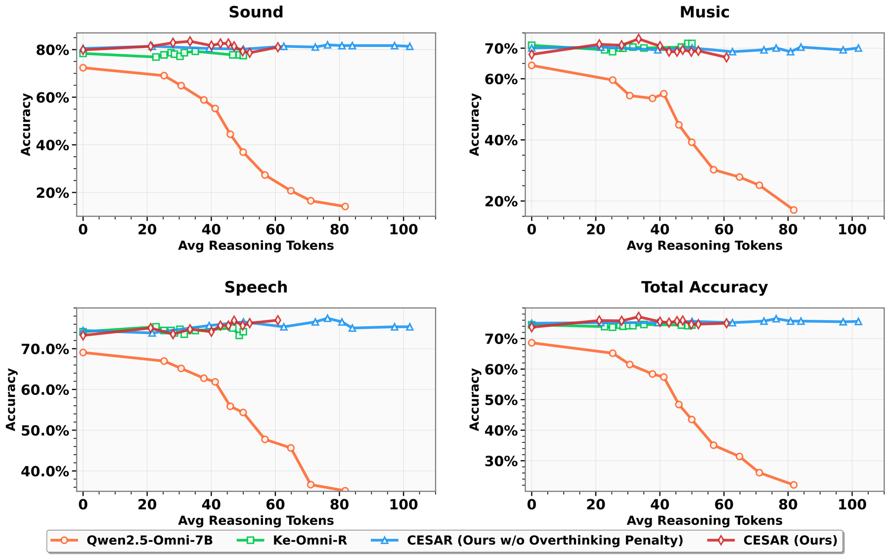
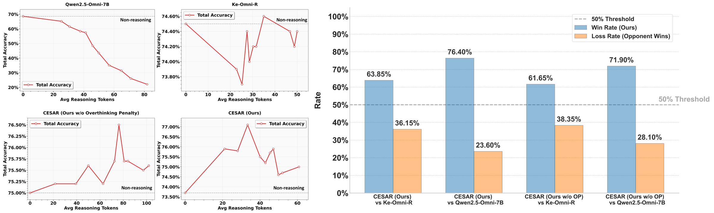
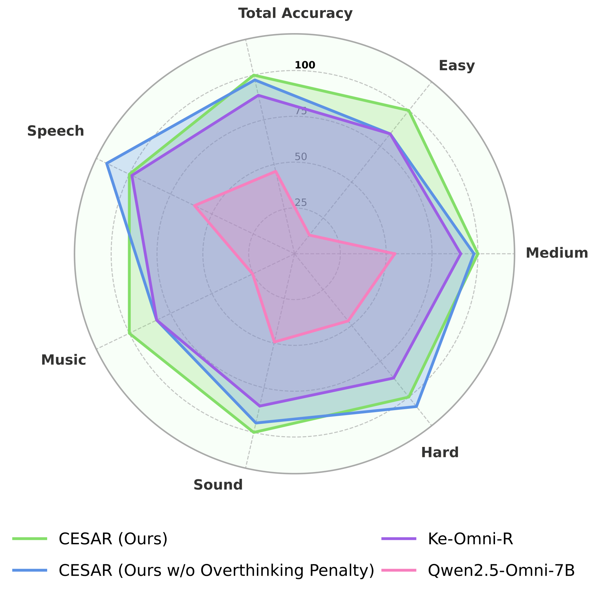
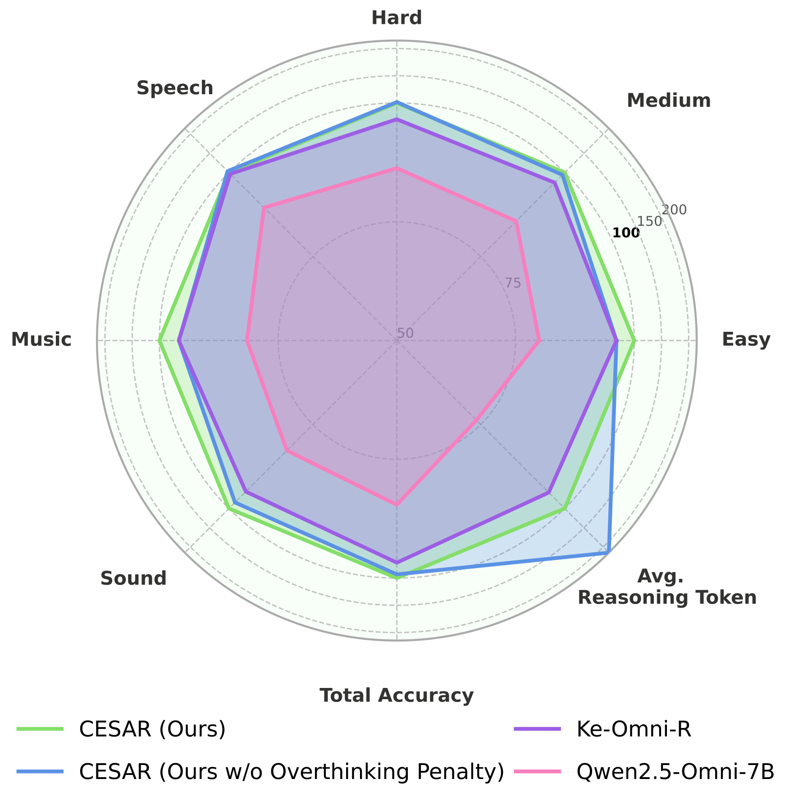
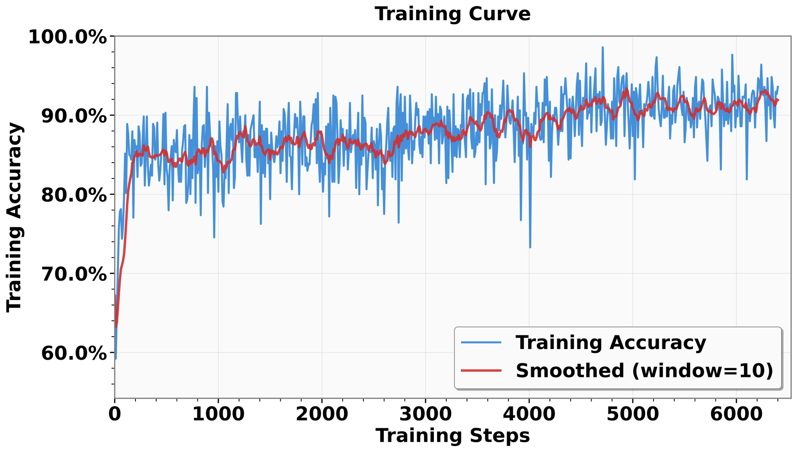
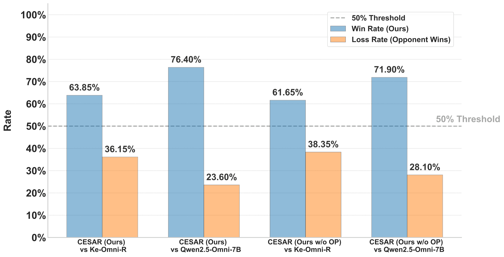
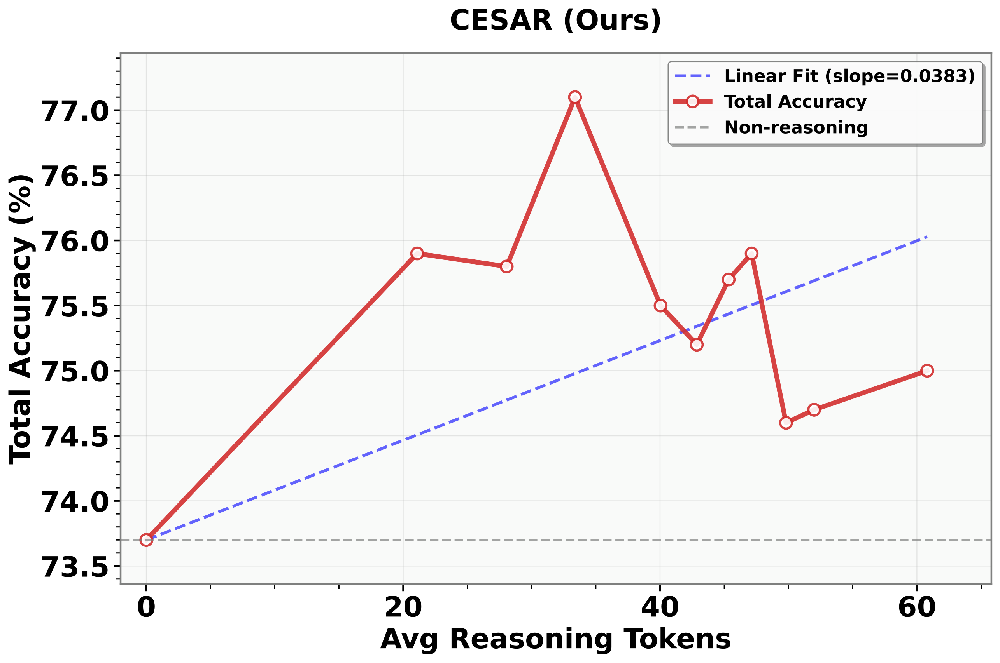
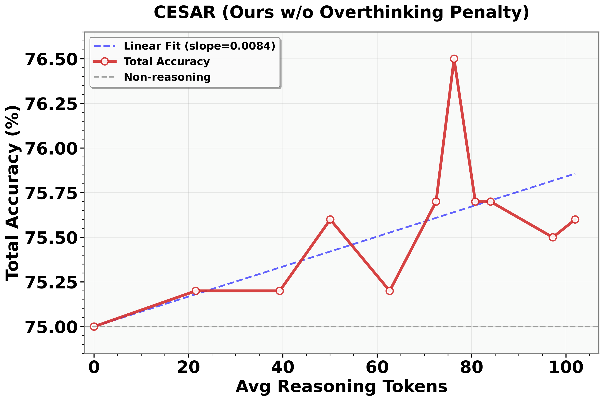
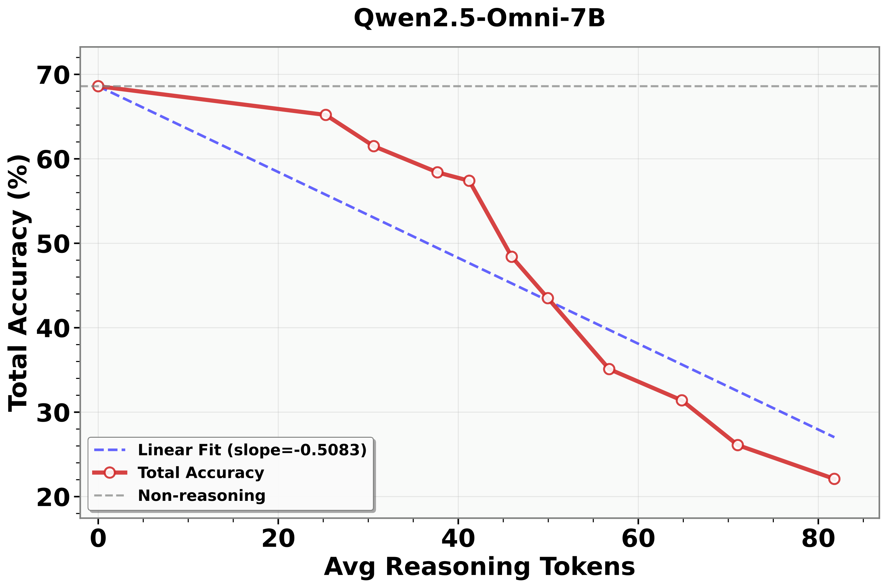

TL;DR — Audio LLMs trained only on outcome rewards produce hallucinatory, inconsistent, and unscalable reasoning chains. CESAR shifts to rewarding the reasoning process itself via online RL (GRPO), resolving test-time inverse scaling and achieving SOTA on MMAU — outperforming Gemini 2.5 Pro and GPT-4o Audio.
Figure 1. General framework comparison of different training paradigms for Audio LLMs. CESAR's process rewards incentivize consistency, structured analytical reasoning, and calibrated depth — resolving test-time inverse scaling and enabling reasoning to genuinely help performance.
🔍 The Problem
Adding chain-of-thought reasoning to Audio LLMs often degrades performance — a phenomenon we term test-time inverse scaling. Longer reasoning chains yield progressively worse results. Why?
❌ Without CESAR
Models without guidance for the reasoning process produce hallucinatory, inconsistent reasoning that accumulates errors over longer chains. Outcome-only rewards cannot fix this.
✅ With CESAR
Process rewards incentivize consistency, structured analytical patterns, causal reasoning, and calibrated depth — transforming reasoning from a liability into a genuine capability.
⚙️ Method
CESAR uses Group Relative Policy Optimization (GRPO) with a multi-faceted reward suite that goes beyond simple correctness:
1
Correctness Reward
Standard outcome reward — is the final answer right?
2
Consistency Reward
Does the reasoning chain stay internally consistent?
3
Structure Reward
Does the reasoning follow structured analytical patterns and causal logic?
4
Depth Calibration
Is the reasoning depth calibrated to task complexity? Avoid over- and under-thinking.
📊 Results
SOTA
MMAU Test-mini benchmark
> 2.5 Pro
Outperforms Gemini 2.5 Pro
> GPT-4o
Outperforms GPT-4o Audio
✓ Scale
Reasoning scales positively at test time
Model
MMAU Test-mini
Reasoning Scaling
GPT-4o Audio
~65%
❌ Inverse scaling
Gemini 2.5 Pro
~68%
❌ Inverse scaling
Baseline (outcome-only RL)
~63%
❌ Inverse scaling
CESAR (Ours)
SOTA Best
✅ Positive scaling
🏗️ Framework Architecture

Figure 2. Complete CESAR training pipeline with scaling analysis. Process rewards decompose reasoning quality into consistency, structure, and depth calibration — enabling stable, scalable reasoning improvement.
📈 Test-Time Scaling Analysis

Figure 3. Test-time scaling curves. Baselines exhibit inverse scaling; CESAR maintains positive scaling as reasoning tokens increase.

Figure 4. Win rate analysis at different reasoning token budgets — CESAR's advantage grows with more compute.
🎯 Multi-Dimensional Evaluation

Figure 5. Multi-dimensional performance radar showing CESAR's balanced improvement across all reasoning quality dimensions.

Figure 6. Token-level radar comparison showing how CESAR improves reasoning quality even at the individual token level.
📉 Training Dynamics & Win Rate

Figure 7. Training reward curves showing stable convergence of CESAR's multi-faceted process rewards.

Figure 8. AI judge win rates — CESAR consistently wins across multiple evaluation dimensions and prompts.
📐 Scaling Slope Ablation
The scaling slope measures whether additional reasoning tokens help or hurt. A positive slope means more thinking = better results.

Figure 9. CESAR achieves consistent positive scaling slope — the only method where reasoning genuinely helps.

Figure 10. Ablation: removing the overthinking penalty degrades slope — every component in CESAR's reward suite matters.

Figure 11. Qwen2.5-Omni baseline shows flat/negative scaling — without process rewards, reasoning doesn't scale.
📅 Publication Journey
Oct 2025
arXiv preprint released (arXiv:2510.20867)
Oct 2025
Submitted to ICLR 2026 (Submission #8335)
Submitted to The Fourteenth International Conference on Learning Representations.
@inproceedings{fan2026incentivizing,
title={Incentivizing Consistent, Effective and Scalable Reasoning
Capability in Audio {LLM}s via Reasoning Process Rewards},
author={Jiajun Fan and Roger Ren and Jingyuan Li and Rahul Pandey and
Prashanth Gurunath Shivakumar and Ivan Bulyko
and Ankur Gandhe and Ge Liu and Yile Gu},
booktitle={The Fourteenth International Conference on Learning Representations},
year={2026},
url={https://openreview.net/forum?id=DUr48hxO2h}
}